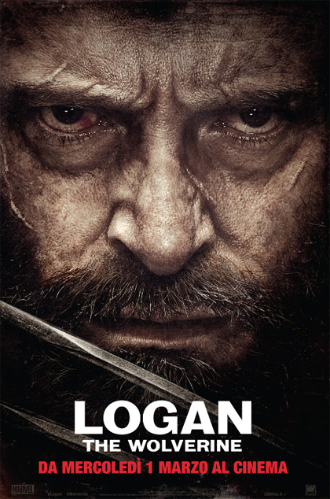
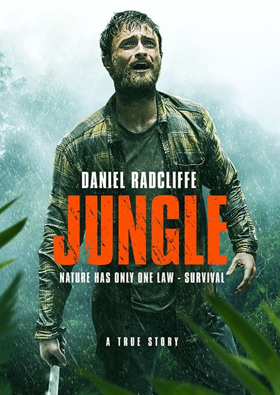
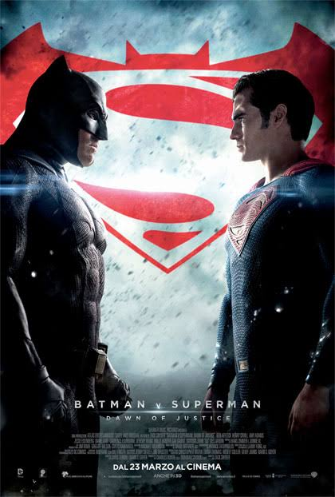
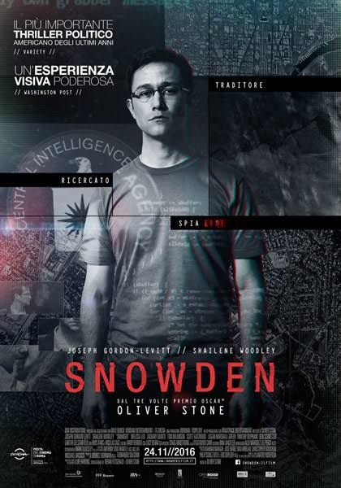

Questo ultimo capitolo della saga è quello che vi farà tremare davvero. Gli effetti speciali spettacolari, accompagnati dalla recitazione di uno Hugh Jackman
in uno dei ruoli che gli è sicuramente riuscito meglio nella vita, vi faranno adorare questo film (se avete seguito i precedenti). Questa volta avrete davvero paura
per Wolverine, lo accompagnerete per tutto il film provando la sua stessa vulnerabilità, provando rabbia e commozione. Ogni scontro potrebbe essere fatale e la componente
sentimentale, di basso livello nei film precedenti, qui è trattata davvero bene, cercando di voler dare allo spettatore il finale pieno di emozioni che si merita.
Il fatto che questa volta il titolo sia il suo stesso nome "Logan", sta proprio a significare che vedrete uno Wolverine più umano che mai, proprio come noi che vivremo questa avventura con lui immersi fino in fondo.
Verdetto per questo film?
GUARDO
Senza dubbio uno dei migliori film del 2016. La storia pazzesca di questo ragazzo e di come affrontò la seconda guerra mondiale senza armi, essendo
un obiettore di coscienza. Andrew Garfield è semplicemente straordinario nell'interpretazione. Film di guerra in tutto e per tutto, l'azione
e l'adrenalina sono continui. Ciò che lo contraddistingue è la profonda empatia nei confronti di questo ragazzo, rappresentato in pratica
come una persona che non farebbe del male a nessuno. Questa caratteristica è quella che spinge lo spettatore a supportare il protagonista, a sperare
che sopravviva e a sobbalzare preoccupato ad ogni colpo che gli si avvicina. Una straordinaria esaltazione dell'umanità e della bontà umana, oltre che
dell'eroismo del giovane soldato. Verdetto per questo film?
GUARDO

Un survival-adventure davvero da lasciare col fiato sospeso fino all'ultimo. L'interpretazione di Daniel Radcliff è magistrale. Basato sulla storia
vera di un uomo disperso nella foresta e che deve riuscire a sopravvivere. In preda alla denutrizione e alle allucinazioni, il protagonista lotta
per rimanere in vita giorno dopo giorno andando verso la follia più totale. Il film fa emergere l'impotenza e la piccolezza dell'uomo
di fronte alla natura e cerca di trasmettere tutta la disperazione e il dolore di un uomo che non riesce a trovare una via d'uscita, in un
luogo dove le possibilità di essere trovati sono meno di 0, mentre quelle di diventare cibo per animali molte. Soffrirete
ogni secondo in quella foresta sulla vostra pelle e aspetterete la fine del film per sapere chi vincerà. Verdetto per questo film?
GUARDO

Film molto lento, anzi troppo. Così lento che l'unica cosa che aspetterete con ansia sarà lo scontro finale (che sarebbe l'unico motivo per guardare il film).
Già sostituire un Batman come Christian Bale non era assolutamente facile, e iniziare così non era certo la cosa migliore da fare. Il nuovo Batman è poco
convincente e poco espressivo. A tutto ciò si aggiunge la mancanza totale di azione, solo dialoghi fino alle scene finali. Effetto troppo soporifero per
un film di supereroi da cui ti aspetti azione, calci e pugni ogni momento. Film assolutamente non all'altezza della propaganda fatta e delle aspettative.
Se siete amanti dei supereroi potreste anche guardarlo, ma non vi darà davvero nessuna emozione. Se non lo siete evitate direttamente. Verdetto per questo film?
PASSO

Un film-documentario sulla vita di Snowden, l'uomo che rivelò i segreti della CIA a tutto il mondo facendo sapere che la CIA spia tutti i cittadini,
Americani compresi, anche in situazioni in cui non è necessario farlo. Rivelò che la CIA può entrare in ogni computer o dispositivo senza problemi,
accendendo webcam e microfoni, potendo guardare e ascoltare i cittadini a loro insaputa in qualunque momento della loro vita. Una rivelazione che cambiò
la visione del mondo. Una storia che non può non interessare, ricca di segreti e informazioni utili a comprendere il mondo in cui viviamo e il potere
che hanno i potenti. Il film ripercorre tutta la vita di Snowden dall'ingresso nella CIA fino alla confessione pubblica dei suoi segreti e le
conseguenze del suo gesto. Verdetto per questo film?
GUARDO